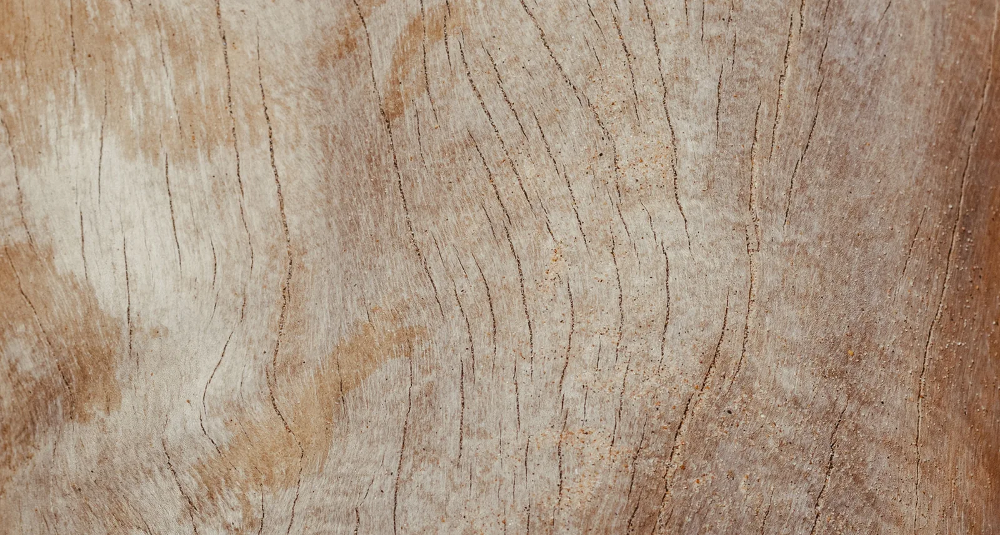
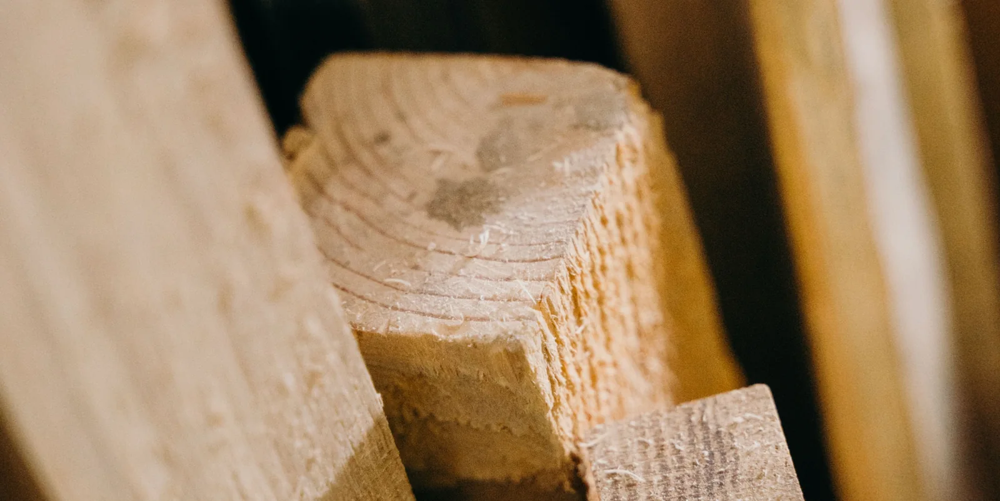

WOOD
Wood is a natural, durable material that can be carved, shaped, and refined into both functional and sculptural forms. Its unique grain, texture, and warmth bring character to each design. Across this collection, wood is used to explore structure, precision, and the contrast between natural and manufactured materials.
EXPLORE THE OBJECTS

